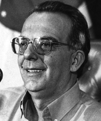

Político influente em Goiás, Henrique Santillo foi o último governador a administrar a região que viria a se tornar o Estado do Tocantins. Durante sua campanha eleitoral em 1986, comprometeu-se a apoiar a criação do novo estado. Ao assumir o governo em 1987, colocou toda a estrutura do governo de Goiás à disposição da Comissão Norte do Tocantins (Conorte) e das lideranças que lutavam pela emancipação da região.
Santillo disponibilizou salas no Escritório de Representação do governo em Brasília para a Comissão de Estudos, demonstrando apoio concreto e pioneiro ao movimento separatista. Sua postura favorável criou um clima de cordialidade e cooperação entre os governos de Goiás e do recém-criado Tocantins.
